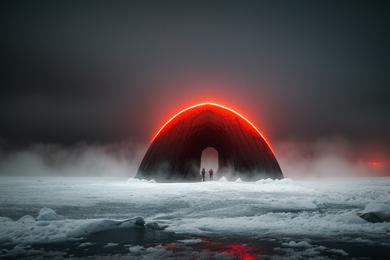
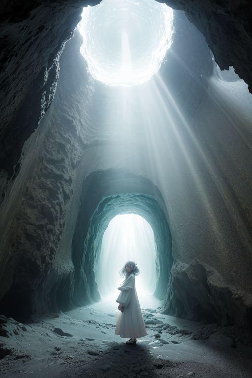
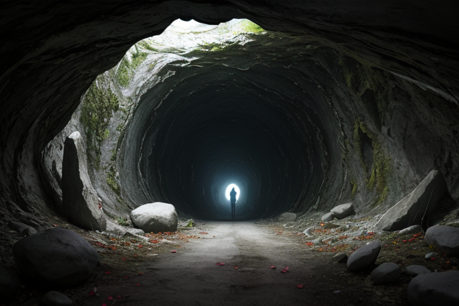
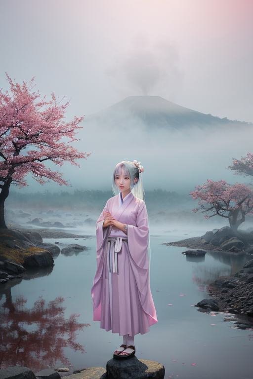
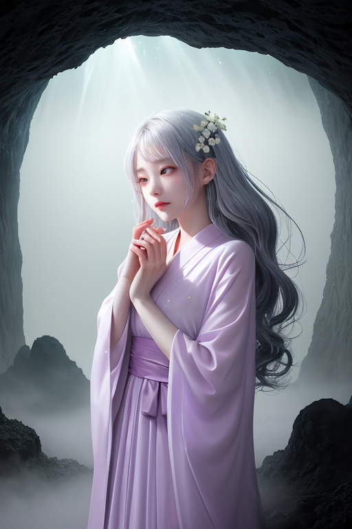

第一章 現実の青森
あなたはまだ気づいていない。この土地にも、王がいることを。
青函トンネルの最深部、海の下の暗闇は、終わりと始まりの境界だ。ここでは、歪みが絶えず蠢く。本州と北海道を隔てる海峡の地殻は、常に軋み、引き裂かれようとする。その圧力を、ただ一人の存在が受け止めていた。アオモリア・レヴナント、再生王である。彼はトンネルの壁に手を触れ、星から授かった力を微かに流す。大規模なズレを一つの段階へと緩和し、破断の連鎖を寸前で止める。彼は災害を消せない。ただ、終わりを、ほんの少し先へとずらす。
港町・青森では、地吹雪が港を覆う。彼は防波堤の影に立ち、吹きすさぶ雪と風の粒子一つ一つに触れ、その軌道を微調整する。船の進路を阻む氷塊の生成を遅らせ、家屋を押し潰す積雪の重みを、ほんのわずか軽減する。全ては目に見えない調整だ。彼の仕事に、喝采はない。ただ、見過ごされる日常があるだけだ。
彼は問う。この吹雪の向こうに、本当の終わりはあるのか。それとも、ただの通過点なのか。答えは、まだ霧の中にある。

第二章 歪みの兆候
青函トンネルの最深部、津軽海峡の底で、彼は微かな軋みを感じ取った。一九八八年の開通以来、この巨大な構造物は本州と北海道を結び、人と物資の流れを変えた。しかし、海底の岩盤は絶えず圧力に呻き、トンネルという「異物」への抵抗を続けている。彼の役目は、その抵抗が破局的な歪みへと至らないよう、圧力を一点に集中させず、広く薄く分散させることだ。
トンネルは境界そのものだった。内と外、かつて隔てられていたものをつなぎ、新たな流れを生んだ。しかし、つなぐ行為そのものが、新たな緊張を生む。観光客の増加、物流の変化、それに伴う地域のゆらぎ。すべては目に見えない歪みの連鎖だ。
彼は暗闇の中で手を伸ばす。岩盤の呻きを、冷たいコンクリートの震えを、その掌で受け止める。消すことはできない。ただ、その「終わり」の予感を、ほんの少し先へ、ゆっくりと送り出すだけだ。トンネルの向こうから、北海道の風がかすかに流れ込んでくる。それは、終わりではなく、新たな何かの始まりを告げる風なのかもしれない。彼は、ただ静かに耳を澄ませた。

第三章 王の葛藤
青函トンネルの最深部で、アオモリアは問いかけられた。歪みの奔流は、単なる地殻の軋みではない。それは、この地に積もった無数の「終わり」の記憶だった。津軽海峡を隔てた孤独、地吹雪に消えた命、廃藩となった城下町の寂寥。彼はそれらを微調整し、先送りしてきた。だが、果たしてそれが正しいのか。終わりを遅らせることは、再生を阻むことにはならないか。
「終わりを、ただ恐れるだけではいけない」
ネブラの声が、霧のように彼の意識を包んだ。彼女は、彼が背負おうとする全ての終焉を知っている。
「でも、受け入れることは、諦めることなのか」
アオモリアの内側で、静かな葛藤が渦巻く。林檎の花は散り、実は落ちる。その腐敗が、やがて新たな命の土壌となる。彼の役割は、散ることを止めることではない。散るその瞬間の衝撃を和らげ、種が地に還るまでの時間を、ほんの少しだけ整えることなのだ。彼は深く息を吸い、岩盤の呻きに耳を澄ませた。拒むのでも、ただ流されるのでもない。終わりという事実そのものを、掌で受け止める選択を。

第四章 妖精との対話
恐山の冷たい霧が、イタコの低い詠唱を包み込む。ネブラは、その霧そのもののように、アオモリアの背後に静かに立っていた。「王よ、あなたは『終わり』を、線で捉えすぎています」
彼女の声は、記憶そのものが紡ぐようだった。「津軽海峡を隔てて、かつては別れが絶えませんでした。でも、トンネルが開けば、それは『通り道』に変わります。青函連絡船の終わりは、新しい繋がりの始まりでした」霧の粒が、微かに光る。「この土地の人々は知っています。林檎の木は、実を落とすことで次の春を準備する。ねぶたは、燃やされるためにこそ、豪華に作られる」
アオモリアは、十和田湖の底に沈むという太古の火山の痕跡を想った。爆発という終焉が、この深い碧の湖を生んだ。「つまり…」
「はい。私たちが調整するのは、『終わり』という一点の衝撃ではありません。その一点が、次の『何か』へと変容していく、ほんのわずかな『間』なのです。別れの悲しみが、記憶の温もりに変わるまで。破壊の熱が、創造の種火になるまで。その狭間の時間を、ほんの少しだけ、穏やかに整える。それが、終着と再生を司る我々の役目です」
ネブラの霧がそっと王を包んだ。それは拒絶でも同情でもなく、ただ、そこにある事実を共に受け止める、静かな共在だった。

第五章 微調整と余韻
青函トンネルの最深部、本州と北海道を隔てる海峡の下で、アオモリア・レヴナントは立っていた。巨大な構造物が地殻の歪みを支えるその一点は、物理的な「終わり」と「始まり」が交差する場でもあった。王は手をかざす。星からの使命に従い、岩盤に蓄積される微細なストレスを、ほんのわずか分散させる。大災害を防ぐことはできない。ただ、その衝撃が伝わる時間を、ほんの一瞬、遅らせるだけだ。
その調整の余韻が、地上にさざ波のように広がっていく。恐山でイタコが紡ぐ言葉の端々に、ほのかな温もりが宿る。津軽三味線の一節が、哀愁を帯びながらも、どこか前を向く力を持つ。吹雪の中を帰路につく人の足元が、ほんの少しだけ軽くなる。
王は振り返らず、前に進み続ける。背後から、ネブラの霧が静かに彼を包み、ネブリナの林檎の香りがかすかに漂う。終わりは、確かに存在する。しかし、その直後から、目には見えない何かが静かに動き始める。別れの悲しみが記憶へ、破壊の余燼が再生の種へと変容していく、そのほんのわずかな「間」を、彼らは見守り、微調整する。
あなたの町にも、王がいる。